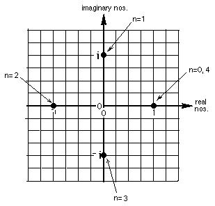

Abe, a 7th grader, uses a TI 85 to find I1/2

I had Abe, a 6th grader, doing powers of I, then had him graph In on graph paper in the complex plane. He graphed I1 and I2, I3 and I4 (see above). Then I asked him where I1/2 would be. He picked up my TI85 and put in square root of (-1). Now I had never tried this before. He got (0,1) which was the point (0,1i)! Then he took the square root of the square root of -1. This gave (.707..., .707...) and he graphed this point. Abe said this would be I1/2. He went further on the graph to get points on a circle, (and I went into trig with him from there- to show the I1/2 would be (cos 45, sine 45), but as his teacher, I had never tried this before...really exciting!